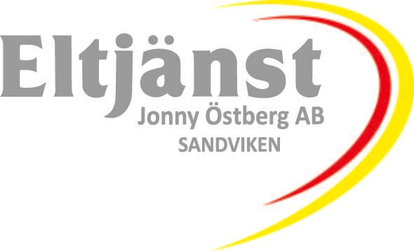

<div *ngIf="mobileQuery.matches; then mobile else browser"></div>

<ng-template #browser>
  <mat-toolbar class="white">
    
    <div style="margin-left: 50px;">
      <button mat-button [routerLink]="['/home']" routerLinkActive="activebutton" class="margin-5">
        <div *ngIf="href == '/home'; then homeButtonFilled else homeButtonOutline"></div>
        <ng-template #homeButtonFilled>
          <ion-icon name="home"></ion-icon><span class="button-text-wrapper" routerLinkActive="underline">Hem</span>
        </ng-template>
        <ng-template #homeButtonOutline>
          <ion-icon name="home-outline"></ion-icon><span class="button-text-wrapper"
            routerLinkActive="underline">Hem</span>
        </ng-template>
      </button>
      <button mat-button [routerLink]="['/rootform']" routerLinkActive="activebutton" class="margin-5">
        <div *ngIf="href == '/rootform'; then rootformButtonFilled else rootformButtonOutline"></div>
        <ng-template #rootformButtonFilled>
          <ion-icon name="document"></ion-icon><span class="button-text-wrapper"
            routerLinkActive="underline">Rotblankett</span>
        </ng-template>
        <ng-template #rootformButtonOutline>
          <ion-icon name="document-outline"></ion-icon><span class="button-text-wrapper"
            routerLinkActive="underline">Rotblankett</span>
        </ng-template>
      </button>
      <button mat-button [routerLink]="['/contact']" routerLinkActive="activebutton" class="margin-5">
        <div *ngIf="href == '/contact'; then contactformButtonFilled else contactformButtonOutline"></div>
        <ng-template #contactformButtonFilled>
          <ion-icon name="mail"></ion-icon><span class="button-text-wrapper" routerLinkActive="underline">Kontakt</span>
        </ng-template>
        <ng-template #contactformButtonOutline>
          <ion-icon name="mail-outline"></ion-icon><span class="button-text-wrapper"
            routerLinkActive="underline">Kontakt</span>
        </ng-template>
      </button>
      <button mat-button [routerLink]="['/businessconcept']" routerLinkActive="activebutton" class="margin-5">
        <div
          *ngIf="href == '/businessconcept'; then businessconceptformButtonFilled else businessconceptformButtonOutline">
        </div>
        <ng-template #businessconceptformButtonFilled>
          <ion-icon name="bulb"></ion-icon><span class="button-text-wrapper"
            routerLinkActive="underline">Affärsidé</span>
        </ng-template>
        <ng-template #businessconceptformButtonOutline>
          <ion-icon name="bulb-outline"></ion-icon><span class="button-text-wrapper"
            routerLinkActive="underline">Affärsidé</span>
        </ng-template>
      </button>
      <button mat-button [routerLink]="['/gdpr']" routerLinkActive="activebutton" class="margin-5">
        <div *ngIf="href == '/gdpr'; then gdprformButtonFilled else gdprformButtonOutline"></div>
        <ng-template #gdprformButtonFilled>
          <ion-icon name="people"></ion-icon><span class="button-text-wrapper"
            routerLinkActive="underline">GDPR-Policy</span>
        </ng-template>
        <ng-template #gdprformButtonOutline>
          <ion-icon name="people-outline"></ion-icon><span class="button-text-wrapper"
            routerLinkActive="underline">GDPR-Policy</span>
        </ng-template>
      </button>
    </div>

    <span class="fill-space"></span>

    <button mat-mini-fab class="margin-right-1" aria-label="Instagram" matTooltip="Instagram" (click)="instagramClick()">
      <ion-icon name="logo-instagram"></ion-icon>
    </button>
    <button mat-mini-fab class="margin-right-1" aria-label="Facebook" matTooltip="Facebook" (click)="facebookClick()">
      <ion-icon name="logo-facebook"></ion-icon>
    </button>

    <div *ngIf="darkThemeActive; then thenBlock else elseBlock"></div>
    <ng-template #thenBlock>
      <button (click)="toggleTheme()" mat-mini-fab class="margin-right-1"
        aria-label="Icon button with a half moon icon, dark theme" matTooltip="Dark theme">
        <ion-icon name="moon-outline"></ion-icon>
      </button>
    </ng-template>
    <ng-template #elseBlock>
      <button (click)="toggleTheme()" mat-mini-fab class="margin-right-1"
        aria-label="Icon button with sun icon, light theme" matTooltip="Light theme">
        <ion-icon name="sunny-outline"></ion-icon>
      </button>
    </ng-template>
    
  </mat-toolbar>
  <mat-divider></mat-divider>

  <router-outlet></router-outlet>

  <mat-toolbar style="background-color: #9b9b9b; position: fixed; bottom: 0;">
    <div style="display: flex; margin: 0 auto;">
      <span style="color:white; font-size: 12px;" class="margin-left-1">
        <ion-icon name="location-outline"></ion-icon> Eltjänst Jonny Östberg AB, Jugasvägen 10, 81135, Sandviken
      </span>
      <mat-divider vertical class="margin-left-1" style="height: 30px;"></mat-divider>
      <span style="color:white; font-size: 12px;" class="margin-left-1">
        <ion-icon name="call-outline"></ion-icon> 070 378 64 30
      </span>
      <mat-divider vertical class="margin-left-1" style="height: 30px;"></mat-divider>
      <span style="color:white; font-size: 12px;" class="margin-left-1">
        <ion-icon name="mail-outline"></ion-icon> jonny@eltjanstsandviken.se
      </span>
      <mat-divider vertical class="margin-left-1" style="height: 30px;"></mat-divider>
      <span style="color:white; font-size: 12px;" class="margin-left-1">
        <ion-icon name="briefcase-outline"></ion-icon> Org.nr: 556977-5157
      </span>
    </div>
  </mat-toolbar>
</ng-template>

<ng-template #mobile>
  <mat-toolbar class="white">
    
    <span class="fill-space"></span>
    <button mat-mini-fab class="margin-right-3" aria-label="Instagram" matTooltip="Instagram" (click)="instagramClick()">
      <ion-icon name="logo-instagram"></ion-icon>
    </button>
    <button mat-mini-fab class="margin-right-3" aria-label="Facebook" matTooltip="Facebook" (click)="facebookClick()">
      <ion-icon name="logo-facebook"></ion-icon>
    </button>

    <div *ngIf="darkThemeActive; then thenBlock else elseBlock"></div>
    <ng-template #thenBlock>
      <button (click)="toggleTheme()" mat-mini-fab class="margin-right-3"
        aria-label="Icon button with a half moon icon, dark theme" matTooltip="Dark theme">
        <ion-icon name="moon-outline"></ion-icon>
      </button>
    </ng-template>
    <ng-template #elseBlock>
      <button (click)="toggleTheme()" mat-mini-fab class="margin-right-3"
        aria-label="Icon button with sun icon, light theme" matTooltip="Light theme">
        <ion-icon name="sunny-outline"></ion-icon>
      </button>
    </ng-template>
  </mat-toolbar>

  <mat-divider ></mat-divider>
  <router-outlet></router-outlet>

  <mat-toolbar style="background-color: #9b9b9b; position: fixed; bottom: 0;">
    <div class="outer-mobile-footer">
      <div class="inner-mobile-footer">
        <button mat-mini-fab [routerLink]="['/home']">
          <div *ngIf="href == '/home'; then homeButtonFilled else homeformButtonOutline"></div>
          <ng-template #homeButtonFilled>
            <ion-icon name="home"></ion-icon>
          </ng-template>
          <ng-template #homeformButtonOutline>
            <ion-icon name="home-outline"></ion-icon>
          </ng-template>
        </button>
        <button mat-mini-fab [routerLink]="['/rootform']">
          <div *ngIf="href == '/rootform'; then rootformButtonFilled else rootformformButtonOutline"></div>
          <ng-template #rootformButtonFilled>
            <ion-icon name="document"></ion-icon>
          </ng-template>
          <ng-template #rootformformButtonOutline>
            <ion-icon name="document-outline"></ion-icon>
          </ng-template>
        </button>
        <button mat-mini-fab [routerLink]="['/contact']">
          <div *ngIf="href == '/contact'; then contactButtonFilled else contactformButtonOutline"></div>
          <ng-template #contactButtonFilled>
            <ion-icon name="mail"></ion-icon>
          </ng-template>
          <ng-template #contactformButtonOutline>
            <ion-icon name="mail-outline"></ion-icon>
          </ng-template>
        </button>
        <button mat-mini-fab [routerLink]="['/businessconcept']">
          <div *ngIf="href == '/businessconcept'; then businessconceptButtonFilled else businessconceptButtonOutline">
          </div>
          <ng-template #businessconceptButtonFilled>
            <ion-icon name="bulb"></ion-icon>
          </ng-template>
          <ng-template #businessconceptButtonOutline>
            <ion-icon name="bulb-outline"></ion-icon>
          </ng-template>
        </button>
        <button mat-mini-fab [routerLink]="['/gdpr']">
          <div *ngIf="href == '/gdpr'; then gdprButtonFilled else gdprButtonOutline"></div>
          <ng-template #gdprButtonFilled>
            <ion-icon name="people"></ion-icon>
          </ng-template>
          <ng-template #gdprButtonOutline>
            <ion-icon name="people-outline"></ion-icon>
          </ng-template>
        </button>
      </div>
    </div>
  </mat-toolbar>
</ng-template>
